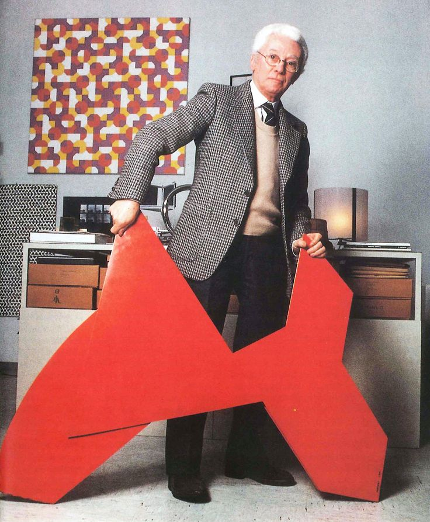

"a flower with love"
About the Author

Bruno Munari
Bruno Munari (October 24, 1907, Milan – September 30, 1998, Milan) was an Italian artist, designer, and inventor who contributed fundamentals to many fields of visual arts (painting, sculpture, film, industrial design, graphic design) in modernism, futurism, and concrete art, and in non visual arts (literature, poetry) with his research on games, didactic method, movement, tactile learning, kinesthetic learning, and creativity.
"To complicate is simple, to simplify is complicated... Everybody is able to complicate. Only a few can simplify."
-Bruno Munari
-Bruno Munari